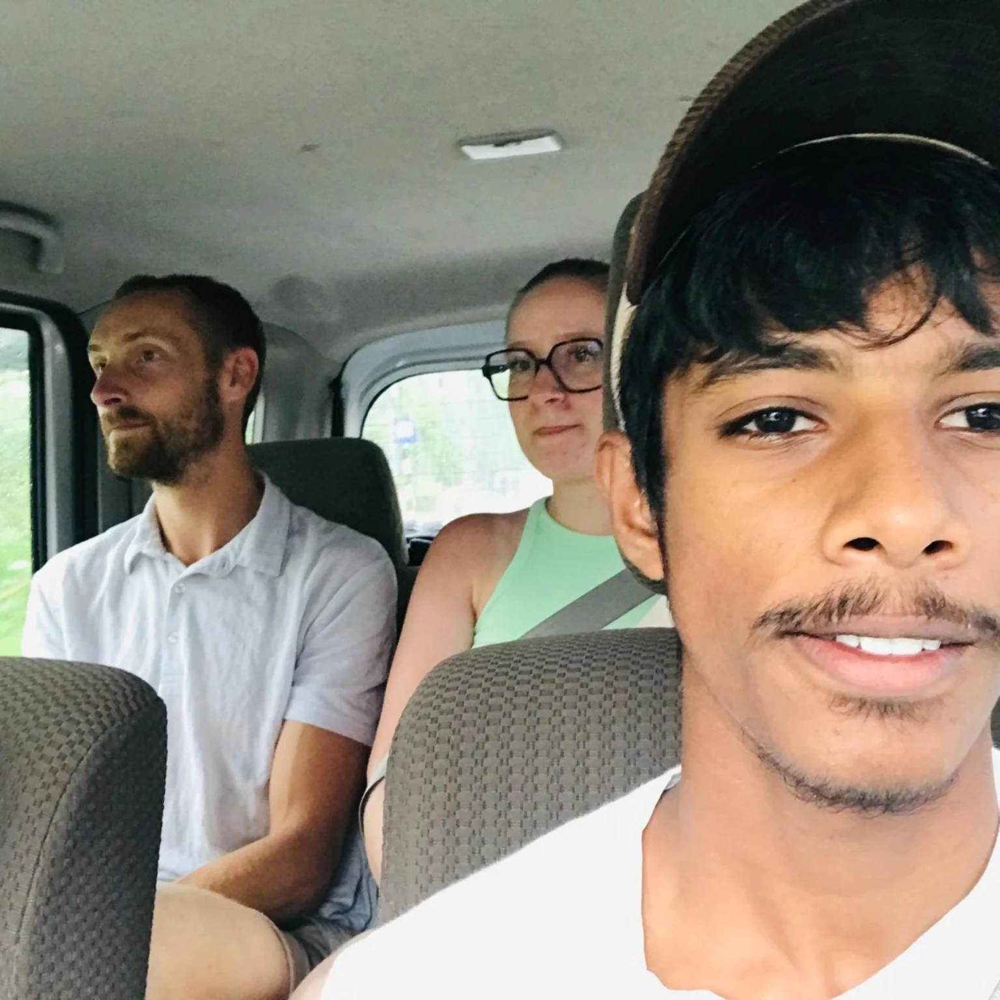
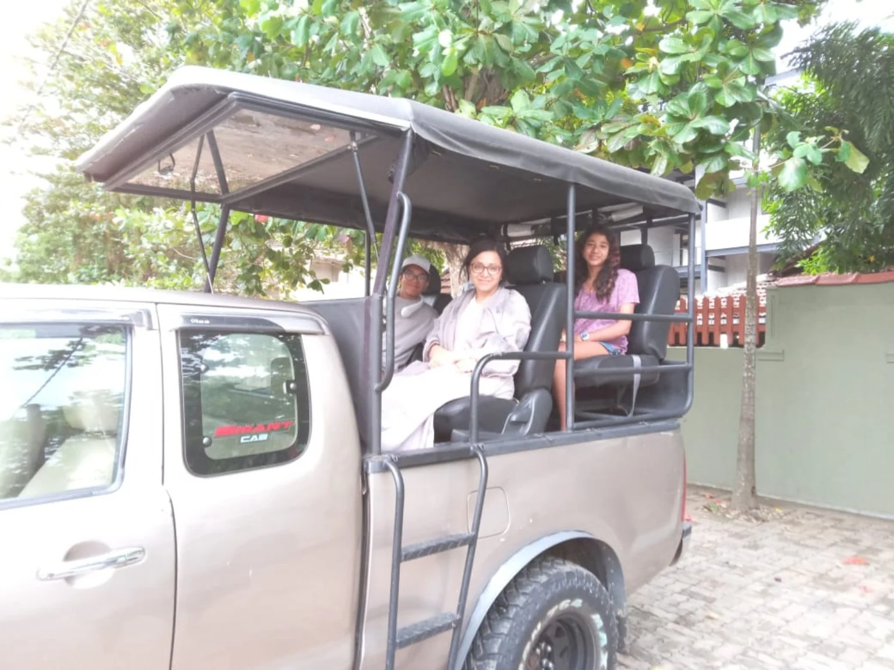

AYUBOWAN. WE’RE GLAD YOU’RE HERE.
A local start.
A world of memories.
Meet Ceylon Safari Tours — travels, safari adventures, and bike rentals from Tangalle, Sri Lanka.

OUR CORNER OF CEYLON
From Tangalle,
with a warm welcome.
Our business brings together a simple idea: help people enjoy the island in a way that suits them.
For some, that means a day in a safari jeep. For others, it’s a private journey, a cultural stop, or the freedom of a rented bike. We arrange travels and bike rentals, with Tangalle as our home base.
We believe a good trip starts with a conversation. You share the idea; we talk through the details together.
Come say hello ↗THE WAY WE TRAVEL
A little closer to the island.
Start with you
Your interests, your dates, your pace. Every enquiry begins with what you have in mind.
Keep it personal
Speak directly with our team to work through your travel or rental arrangements.
Make room for moments
The conversations, the coconut stops, and the shared smiles are part of the journey.
FACES, PLACES & OPEN ROADS
The people make it special.



Your next story starts in Tangalle.
A safari, an island journey, or a bike and an open road. Tell us what you have in mind.
Let’s plan it together